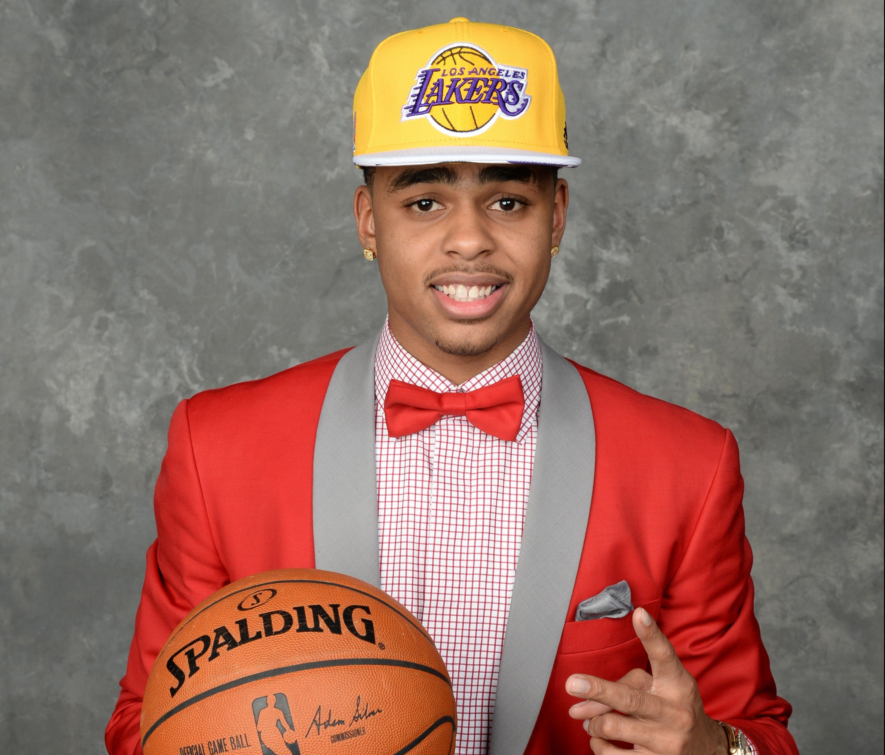

Noteworthy technology acquisitions 2021
Here are the biggest enterprise technology acquisitions of 2021 so far, in reverse chronological order.
Editar

Noteworthy technology acquisitions 2021
Here are the biggest enterprise technology acquisitions of 2021 so far, in reverse chronological order.
Read more